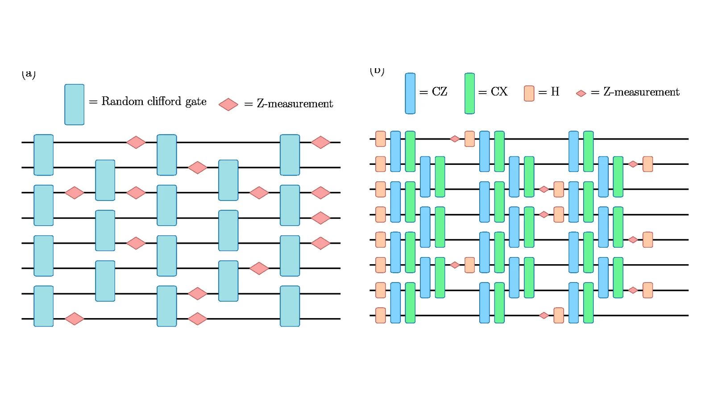
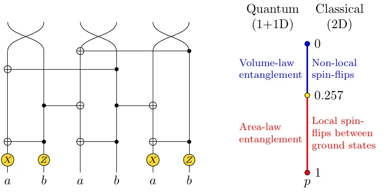
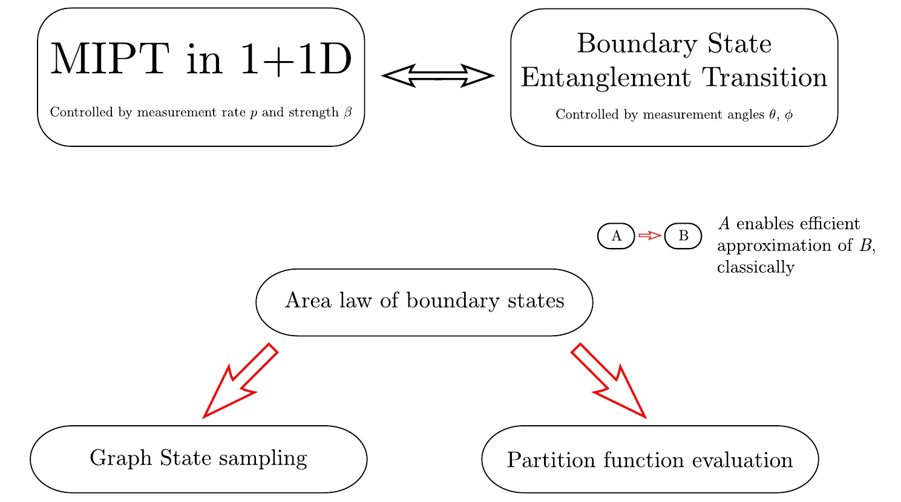
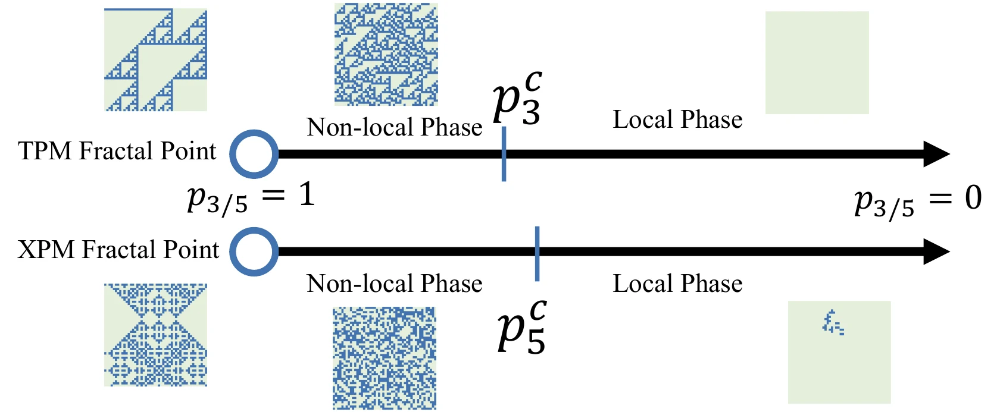

Entanglement and error-correction transitions
Understanding phase structure in monitored quantum circuits and coherent-error models.
Ph.D. candidate in Physics, Boston College
I work with Prof. Xiao Chen on measurement-induced entanglement transitions, coherent-error phases, plaquette models, and the numerical methods needed to study them at scale.
I study problems where quantum dynamics, statistical mechanics, and computation meet: how entanglement changes under measurement, how coherent errors can organize into phases, and how plaquette-model constructions make monitored-circuit problems accessible to classical statistical mechanics.
My computational work is practical by necessity. I write and maintain simulation code in Python, C/C++20, MATLAB/C-MEX, and Julia, usually on Linux clusters with SLURM and Git-based workflows.
Understanding phase structure in monitored quantum circuits and coherent-error models.
Constructing classical plaquette models for monitored circuits and analyzing their symmetries, constraints, and cellular-automaton structure.
Building fast samplers, bit-packed linear algebra routines, and cluster-ready workflows for large sweeps.

Participation-entropy dynamics in random Clifford and quantum automaton circuits.

Classical plaquette-model formulation for hybrid circuits and their emergent phases.

Random-circuit entanglement mapped to complex-weight classical statistical mechanics.

Cellular-automaton structure and phase behavior in random plaquette models.